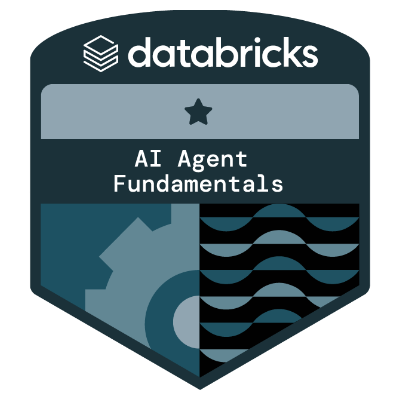

Hi, I'm
Power BI · Tableau · SQL · Python
Transforming complex clinical and business datasets into clear,
actionable insights that drive real decisions.
I'm a Data Analyst specialising in healthcare analytics and business intelligence, with proven experience transforming complex clinical and enterprise datasets into actionable insights.
My toolkit spans the full analytics pipeline — from SQL data modelling and Python-driven EDA to Power BI and Tableau dashboards that help clinical and operational teams make faster, smarter decisions.
I bring a QA-first mindset to analytics, rooted in my early career as a QA Analyst at Tata Consultancy Services — designing test plans and managing defect lifecycles — and reinforced by an ISTQB certification. I write pytest suites to validate data quality before insights ever reach stakeholders.
More recently, I've extended that data-quality discipline into AI — evaluating search relevance and annotating training data for machine learning models, ensuring the data behind AI systems is as trustworthy as the dashboards I build.

Analysed 101,766 diabetic patient admissions to identify clinical factors predicting 30-day readmission — from raw SQL schema to a logistic regression risk model to a Tableau executive dashboard.
End-to-end ETL and Power BI dashboard analyzing whether early-pregnancy maternal fat measurements (ultrasound visceral/subcutaneous adipose tissue) predict gestational complications and neonatal outcomes, built on a 211-case, 116-variable PhysioNet cohort dataset.
46-test pytest suite validating both healthcare and finance pipelines — null checks, range assertions, SQL query contracts, and unit tests for feature engineering functions.
I'm open to Data Analyst roles and freelance analytics projects.
Let's connect!